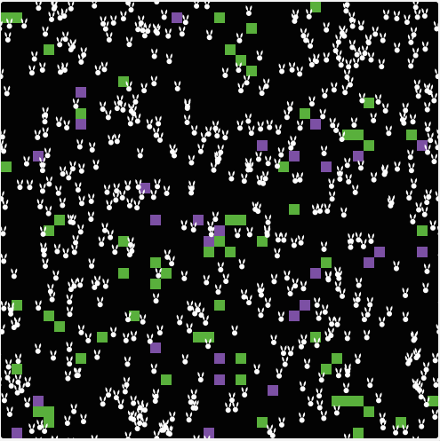

This is my Portfolio Page!
1.1.9 Project - Cake maker!
In this project, the user is allowed to input what cake layers, flavors, and frosting colors they want.
The program is interactive with the user so that they can customize their cake however they would like.

1.2.5 Project - Cookie monster!

My project was a cookie dropper project, where different cookies fall from the sky and the goal is to catch them with a glass of milk. The user can move the milk glass with their WASD keys, and gets at least one point everytime they catch a cookie.
There are 3 types of cookies: each with different points. There is a 30 second timer, the user's goal is to get as many points as they can in 30 seconds!
Scratch Project - Don't Let Fred Die!
In this project, we made a platformer game and the character, Fred, has to avoid the dangerous obstacles and jump over some things to survive and get through the next level.
He only has 40 seconds before he runs out of oxygen. The user can control Fred's movements by pressing the arrow keys.
Fred only has 40 seconds. Good luck!
2.1.6 Project - A pHishy Fish Tank.

In this project, we detected errors throughout the code of a fish tank monitor that may have experienced a data breach. We detected problems with the alkalinity, temperature, and magnesium levels.
4.1.4 Project: Rabbits Grass Weeds Simulation!.
In this project, we analyzed a model that simulated an ecosystem with rabbits, grass, and weeds. The simulation has the rabbits moving around randomly as the grass and weeds grow at random locations.
When a rabbit runs into some grass or weeds, the rabbit gains energy and eventually reproduces. If it doesn't get enough food, it dies. The simulation is setup in a way that you can change the grow rate of the grass and weeds, as well as the grass and weed energy. Throughout the simulation, the rabbits will either increase or decrease in population with the weeds and grass randomly popping up.
3.1.6 Project - Rover Phone Home!
In this project, we explored and analyzed data from a lost rover on a different planet, and tried to match the data to different regions to figure out where it is located. We concluded that the lost rover is in the Desert Plains, basing it off of 4 different factors. First, we saw that the temperature pattern of the data started cool, and then warmed up drastically during the day, which matched with the temperature changes in the Desert Plains. Next, we looked at the data for sound. The Desert Plains had buzzing and chirping sounds, making the sound levels relatively high and constant. In our graph for sound, we saw constant sound levels going up and down to match these animal sounds described. Next was light, which was described as bright and intense during the daytime in the desert, matching our light graph well. We saw high levels of light in our graph that never dropped drastically. Lastly was movement (gyroscope), which was described as constant winds that vary. In the gyroscope graph, there were lots of different patterns, all moving drastically, explaining the varying winds. After seperating and cleaning up our data as well as labeling and organizing it, we closely looked at these 4 factors and inferred that the lost rover is in fact somewhere in the Desert Plains.
3.2.4 Project - Making Meaning From Data!